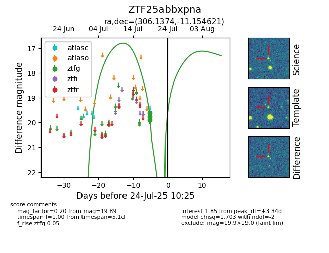

Target ZTF25abbxpna at 2025-07-24 10:25, see:
FINK: fink-portal.org/ZTF25abbxpna
Lasair: lasair-ztf.lsst.ac.uk/objects/ZTF25abbxpna
ALeRCE: alerce.online/object/ZTF25abbxpna
alt names
ZTF25abbxpna (ztf,fink)
coordinates:
equatorial (ra, dec) = (306.1374,-11.15462)
galactic (l, b) = (33.2257,-25.67618)
photometry
last ztfg=19.89
3 ztfg detections
